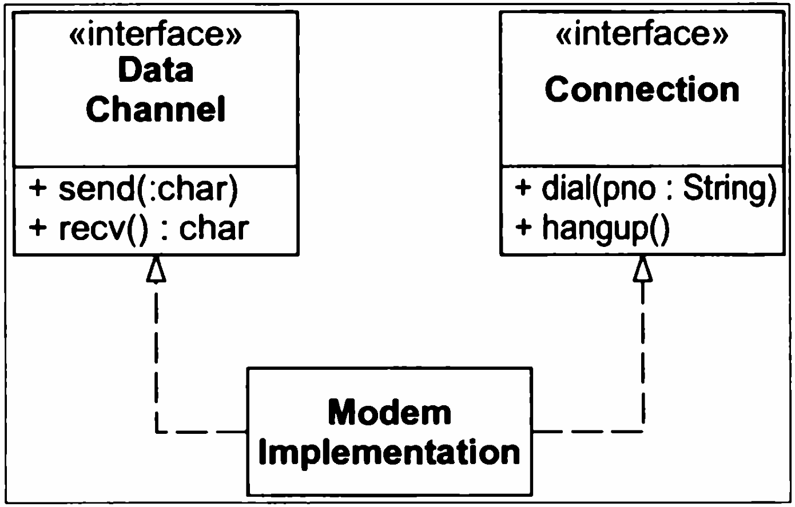
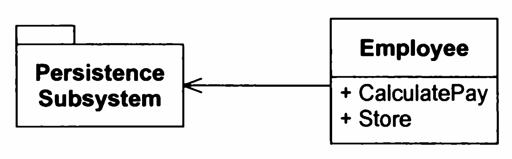

Phương pháp luận lập trình
Bài 6: Các nguyên tắc thiết kế OOP
Trường ĐH Công nghệ – Đại học Quốc gia Hà Nội
Nội dung
- Giới thiệu: Design Smells
- Nguyên lý Đơn Nhiệm (Single Responsibility Principle)
- Nguyên lý Mở Rộng / Hạn Chế (Open/Closed Principle)
- Nguyên lý Thay Thế Liskov (Liskov Substitution Principle)
- Nguyên lý Phân Tách Giao Tiếp (Interface Segregation Principle)
- Nguyên lý Nghịch Đảo Phụ Thuộc (Dependency Inversion Principle)
0.
Giới thiệu:
Design Smells
Giới thiệu: Một vài Design Smells

"Bloaters" (Sự phình to)

class SuperUserManager { // Large Class
// Long Parameter List
public void process(
User u, DB db, Email mail,
Log l, int flag, ...) {
// Long Method: hàng ngàn dòng!
// 1. Kiểm tra User (10 dòng)
// 2. Format HTML Email (20 dòng)
// 3. Lưu Database (100 dòng)
// 4. Ghi Log (15 dòng)
// ...
}
}
- Sự mịt mờ (Opacity) : Không biết được ý định cốt lõi.
- Dễ vỡ (Fragility) : Nếu sử thẻ HTML có thể làm hỏng logic ở Database
"Change Preventers" (Kẻ cản trở thay đổi)
class Person {
String name;
// ...
String officeAreaCode;
String officeNumber;
String getTelephoneNumber() {
return "(" + officeAreaCode + ") " + officeNumber;
}
}
- Tính cứng nhắc (Rigidity): Nếu format số điện thoại thay đổi, bạn phải sửa lớp `Person`
- Tính bất động (Immobility): Nếu hệ thống cần quản lý SĐT cho cả công ty?
- Shotgun Surgery: thay đổi nhỏ → phải sửa nhiều lớp
Couplers (Sự liên kết quá mức)

// Lấy khu vực giao hàng của đơn hàng
String region =
order.getCustomer()
.getAddress()
.getZipCode()
.getRegion();
- Nếu lớp
Addressđổi cách lưu trữ? (Ví dụ không dùng `ZipCode` nữa) - Nếu muốn dùng
orderở dự án khác?
"Switch Statement" (Tư duy thủ tục trong OOP)

// Viết OOP nhưng tư duy Thủ tục!
void readData(int deviceType) {
switch(deviceType) {
case KEYBOARD:
readKbd(); break;
case PAPER_TAPE:
readPt(); break;
// Thêm máy Scan?
// → Mở file và thêm case!
}
}
- Thêm thiết bị mới → phải sửa khối switch
- Needless Repetition: switch bị copy-paste sang nhiều hàm
1.
Single Responsibility Principle
Nguyên lý Đơn Nhiệm
1. Single Responsibility Principle

“ Chỉ vì bạn có thể làm điều đó, không có nghĩa là bạn nên làm! ”
Định nghĩa SRP
Trách nhiệm (Responsibility) là gì?
- Nếu bạn có nhiều hơn một động cơ để thay đổi một lớp, thì lớp đó đang có nhiều hơn một trách nhiệm!
// Modem.java -- SRP Violation
interface Modem {
void dial(String pno); // TN 1:
void hangup(); // Quản lý kết nối
void send(char c); // TN 2:
char recv(); // Truyền tải dữ liệu
}
Có 2 trách nhiệm bị gộp chung:
- Quản lý kết nối:
dial,hangup - Truyền tải dữ liệu:
send,recv
Khi nào nên tách trách nhiệm?
-
NÊN TÁCH: Nếu ứng dụng thay đổi ở phần kết nối gây
Rigidity — các lớp dùng phần truyền dữ liệu cũng phải biên dịch lại.
→ Tách thànhDataChannelvàConnection. - KHÔNG NÊN TÁCH: Nếu hai phần không bao giờ thay đổi vào những thời điểm khác nhau → cố tình tách sẽ tạo ra Needless Complexity.

💡 Không nên áp dụng SRP (hay bất kỳ nguyên tắc nào) nếu không có triệu chứng
Ví dụ điển hình: Employee
"Việc gộp chung các trách nhiệm lại với nhau là điều mà chúng ta hay làm một cách tự nhiên". Khi thiết kế hệ thống, chúng ta thường nghĩ theo thực thể thực tế. Chúng ta hình dung: "Một Employee thì có tên, có lương. Vậy thì lớp Employee phải biết cách tính lương của nó, và nó cũng có thể biết tự lưu thông tin vào cơ sở dữ liệu.

Employee
chứa cả Quy tắc nghiệp vụ (CalculatePay) lẫn
Kiểm soát lưu trữ (Store) —
hai thứ thay đổi vì những lý do hoàn toàn khác nhau.
Why SRP?
- Tổ chức code — một nơi cho mọi thứ ở đúng chỗ
- Dễ Refactor — Low coupling, High Cohesion
- Dễ đặt tên — lớp nhỏ, tập trung → tên tự nhiên, rõ ràng
- Khả năng bảo trì — thay đổi một chỗ không phá hỏng chỗ khác
- Dễ kiểm thử & debug — phạm vi nhỏ, tách biệt rõ
Dấu hiệu nhận biết vi phạm SRP
- Class/Method quá dài; quá nhiều sự phụ thuộc
- Tên cần từ "AND": ví dụ
calculateAndSend() - Tên chung chung: ví dụ
EmployeeManager - Thay đổi một chỗ, nhưng phá hỏng chỗ khác
- Module A biết rõ cách hoạt động bên trong của module B
2.
Open / Closed Principle
Nguyên lý Mở Rộng / Hạn Chế
2. Open / Closed Principle

“ Một cuộc phẫu thuật não là không cần thiết khi đội một chiếc mũ! ”
Định nghĩa OCP
- Open: Có thể mở rộng hành vi qua kế thừa hoặc thêm lớp mới
- Closed: Việc mở rộng không đòi hỏi sửa mã nguồn hiện có
So sánh các cách làm

Chìa khóa là sự trừu tượng hóa (Abstraction)
- Sử dụng lớp cơ sở trừu tượng: module phụ thuộc vào giao diện cố định → đóng để sửa đổi
- Tạo lớp kế thừa mới → mở để mở rộng hành vi
Ví dụ: Ứng dụng chỉ đường

Tương tự như di chuyển đến sân bay — bạn có nhiều chiến lược: đi xe đạp, xe buýt, hoặc gọi taxi. Bạn quyết định tạo một ứng dụng chỉ đường dành cho khách du lịch.
Vấn đề: Navigator App

Tính năng được yêu cầu nhiều nhất: lập kế hoạch lộ trình tự động.
- Version 1: Bạn xây dựng lộ trình di chuyển bằng đường bộ → những người đi ô tô thích
- Nhưng : Thêm xe buýt → sửa
Navigator - Thêm xe đạp → lại sửa
Navigator
Navigator lại tăng gấp đôi kích thước → đến một lúc quá to để bảo trì!
Code vi phạm OCP
public class Navigator {
public enum RouteType { ROAD, WALKING, PUBLIC_TRANSIT, BICYCLE }
public void buildRoute(String start, String end, RouteType type) {
if (type == RouteType.ROAD) {
// ...
} else if (type == RouteType.WALKING) {
// ...
} else if (type == RouteType.PUBLIC_TRANSIT) {
// ...
}
// Muốn thêm xe đạp? → Mở file này ra và thêm else if!
else if (type == RouteType.BICYCLE) {
// ...
}
}
}
Giải pháp: Strategy Pattern

Hint: Bạn nên chọn một lớp thực hiện điều gì đó cụ thể theo nhiều cách khác nhau và trích xuất tất cả các thuật toán này thanh các lớp riêng biệt.
Trích xuất tất cả thuật toán thành các lớp riêng biệt gọi là chiến lược (strategy).
Navigatorđóng vai trò bối cảnh (context)- Lưu trữ tham chiếu đến một chiến lược và ủy quyền công việc
- Chỉ giao tiếp qua interface chung
RouteStrategy, nó không cần biết chi tiết các chiến lược cài đặt như nào.
Code giải pháp OCP
public interface RouteStrategy {
void buildRoute(String start, String end);
}
public class RoadStrategy implements RouteStrategy {
public void buildRoute(String start, String end) {
System.out.println("Tìm đường đi nhanh nhất cho Ô tô...");
}
}
// Thêm phương tiện mới → chỉ tạo class mới, KHÔNG đụng Navigator!
public class Navigator {
private RouteStrategy strategy;
public void setStrategy(RouteStrategy strategy) {
this.strategy = strategy;
}
public void executeRoute(String start, String end) {
strategy.buildRoute(start, end);
}
}
What Open? What Closed?
- Thêm phương tiện mới: chỉ tạo class mới implement
RouteStrategy - Không đụng chạm code cũ
Navigator: không cần thêmif/else- Các chiến lược cũ: an toàn trước thay đổi
Nhưng, Không có thiết kế nào "đóng" tuyệt đối!
- Rồi một ngày đẹp trời, khách hàng yêu cầu: "Tôi muốn tìm lộ trình tối ưu kết hợp: đi bộ → Bus → thuê ô tô, nhưng luôn phải có phương án tiết kiệm nhất"
- Mỗi chiến lược (Car, Walking) chạy độc lập — không biết nhau.
- Để kết hợp → buộc phải sửa
Navigatorhoặc interface → không còn "đóng"
Hãy để bị lừa một lần!
⚠️ Đừng tạo Interface/Strategy khi chưa thấy sự thay đổi thực sự.
Kích thích sự thay đổi sớm
- Viết Test: Đóng vai người dùng — nếu viết test quá khó, code đang quá cứng nhắc và có thể thiếu abstraction
- Ví dụ: Test tổng thời gian đi giữa các chiến lược (Walk → Car). Nhưng khi test bạn gặp vấn đề "Ai là người gọi chúng, lấy đầu ra của chiến lược nào làm đầu vào cho cái khác, hay bất kỳ logic phức tạp nào tính thời gian giữa các chiến lược?" → Đương nhiên
Navigatorsẽ phải làm điều đó → vi phạm OCP - → Tạo interface
MultiModelStrategy— test trở nên dễ viết hơn
3.
Liskov Substitution Principle
Nguyên lý Thay Thế Liskov
3. Liskov Substitution Principle

“ Nếu nó trông như con vịt, kêu như con vịt, nhưng lại cần pin - thì có lẽ bạn đã thiết kế trừu tượng sai! ”
Định nghĩa LSP
- Mối liên hệ với OCP: Cơ chế chính của OCP là tính trừu tượng và đa hình
- Vai trò của LSP: Cung cấp quy tắc thiết kế để quản lý việc sử dụng kế thừa, giúp tạo cấu trúc phân cấp tốt và tránh vi phạm OCP
Ví dụ vi phạm LSP
class Shape {
enum Type { SQUARE, CIRCLE }
Type type;
}
class Circle extends Shape {
void draw() { }
}
class Square extends Shape {
void draw() { }
}
// Hàm vi phạm OCP và LSP:
void drawShape(Shape s) {
if (s.type == Type.SQUARE)
((Square) s).draw(); // ép kiểu!
else if (s.type == Type.CIRCLE)
((Circle) s).draw();
}
CirclevàSquarekhông ghi đè phương thức chung nào từShape- Hàm
drawShape()phải tự kiểm tra loại hình → vi phạm cả OCP lẫn LSP
Ví dụ kinh điển: Hình vuông là Hình Chữ Nhật?
- Toán học: Hình vuông là một HCN ✓ Vì vậy thường cho HV kế thừa HCN?
- Tuy nhiên, HCN: chiều rộng và cao độc lập
- Hình vuông: rộng phải luôn bằng cao
Square vào hàm g thì diện tích sẽ tính theo HV chứ không phải HCV → vi phạm LSP
class Square extends Rectangle {
@Override
public void setWidth(double w) {
super.setWidth(w);
super.setHeight(w); // giữ w=h
}
}
void g(Rectangle r) {
r.setWidth(5);
r.setHeight(4);
// Mong đợi: 5 × 4 = 20
// Square: 4 × 4 = 16 → lỗi!
if (r.getWidth()*r.getHeight()!=20)
throw new RuntimeException(...);
}
Tính hợp lệ không nằm ở chính nó
- Khi nhìn cô lập
Rectangle: chiều rộng và chiều cao độc lập → hợp lệ - Khi nhìn cô lập
Square: ghi đè để đảm bảo w=h → hợp lệ - Nhưng: Giả định của Client cho Rectangle — "nếu tôi thay đổi chiều rộng, chiều cao sẽ giữ nguyên" → Square phá vỡ giả định này
Rules: Thiết kế theo hợp đồng
- Mục tiêu: Biến các giả định ngầm của client thành quy tắc rõ ràng để thực thi LSP
Điều kiện phải đúng để phương thức thực thi.
→ Lớp con chỉ được yếu hơn hoặc bằng lớp cha.
Cam kết sau khi phương thức hoàn tất.
→ Lớp con chỉ được mạnh hơn hoặc bằng lớp cha.
Rectangle.setWidth():
width == w && height == old.height. Tuy nhiên hậu điều kiện của phương thức
Square.setWidth() không đảm bảo điều này → yếu hơn → không nên kế thừa.
Giải quyết vấn đề Rectangle và Square
Thay vì ép Hình vuông IS-A Hình chữ nhật, thừa nhận chúng chỉ có chung một vài đặc tính (diện tích) và tách biệt hành vi gây xung đột.
- Tạo interface chung
Shape: Lớp này chỉ hứa : "Tôi có thể cung cấp diện tích thông qua area() cho bất kỳ hình nào" , nên tiền và hậu điều kiện đơn giản hơn. - Triển khai riêng:
RectanglevàSquareimplementShape, không kế thừa nhau

Ví dụ: Vi phạm tiền điều kiện
class TextDocument {
protected String content = "";
// Tiền điều kiện: 'text' không được null. Chấp nhận độ dài thoải mái!
public void addText(String text) {
if (text != null) { content += text; }
}
}
class SmsDocument extends TextDocument {
// Tiền điều kiện MẠNH HƠN: text không null VÀ độ dài phải <= 160 ký tự
@Override
public void addText(String text) {
if (text != null && text.length() <= 160) {
content += text;
}
// Nếu dài hơn 160 ký tự, hàm bỏ qua — không báo lỗi!
}
}
→ Tiền điều kiện mạnh hơn → vi phạm LSP!
4.
Interface Segregation Principle
Nguyên lý Phân Tách Giao Tiếp
4. Interface Segregation Principle

“ Clients không nên phụ thuộc vào giao tiếp (interface) mà chúng không sử dụng! ”
Định nghĩa ISP
- Cám dỗ: Tạo một interface lớn duy nhất cho tất cả
- Hậu quả: Needless Redundancy — các lớp buộc implement phương thức không liên quan

Vấn đề: Door và TimerClient
Tình huống:
Xét một hệ thống an ninh có lớp cơ sở Door (Cửa) chỉ xử lý các hành động cơ bản như khóa và mở khóa. Lớp triển khai TimedDoor cần thêm tính năng phát báo động khi cửa mở quá lâu, do đó nó cần giao tiếp với một đối tượng Timer.
- Needless Redundancy: Thừa thãi code.
- Coupling: Giao diện Door bị "dính" vào Timer.
- Vi phạm LSP: Lớp con bị ép cài đặt hàm vô nghĩa.
public interface TimerClient {
void timeOut();
}
// SAI: Ép Door kế thừa TimerClient
public interface Door extends TimerClient {
void lock();
void unlock();
boolean isDoorOpen();
}
public class NormalDoor implements Door {
public void lock() { /*...*/ }
public void unlock() { /*...*/ }
public boolean isDoorOpen() { return false; }
@Override
public void timeOut() {
// Bị ép buộc implement thừa thãi!
}
}
Giải pháp: Tách biệt qua Đa Kế Thừa

TimedDoor kế thừa trực tiếp từ cả Door và TimerClient.
NormalDoor chỉ implement Door — không biết gì về timer.
Ví dụ khác: The ATM User Interface

- Các lớp con của
Transactiondùng chung giao diện UI khổng lồ - Ví dụ, khi thêm
PayGasBillTransaction→ thêm method vào UI → tất cả phải biên dịch lại - Mỗi giao dịch phụ thuộc vào phương thức của UI mà không giao dịch nào khác sử dụng
Giải pháp: Phân tách giao diện UI

Phân tách thành DepositUI, WithdrawUI, TransferUI,... rồi đa kế thừa vào UI tổng.
IElectricBillUI
→ thì DepositTransaction không biết gì, không biên dịch lại. Thiệt hại chỉ ở phạm vi rất nhỏ — không gây hiệu ứng domino toàn hệ thống.
5.
Dependency Inversion Principle
Nguyên lý Nghịch Đảo Phụ Thuộc
5. Dependency Inversion Principle

“ Bạn có hàn trực tiếp một chiếc bóng đèn vào dây diện trong tường không? ”
Định nghĩa DIP
- Các module cấp cao không nên phụ thuộc vào module cấp thấp. Cả hai nên phụ thuộc vào sự trừu tượng (abstractions).
- Sự trừu tượng không nên phụ thuộc vào chi tiết. Chi tiết nên phụ thuộc vào sự trừu tượng.
Tại sao gọi là "Đảo ngược"?
- Phương pháp truyền thống: Module cấp cao phụ thuộc vào cấp thấp → chính sách phụ thuộc vào chi tiết
- Hậu quả: Thay đổi ở chi tiết → ảnh hưởng trực tiếp đến chính sách cấp cao · Khó tái sử dụng
Mô hình phân cấp ngây thơ

Policy (cấp cao) → Mechanism → Utility (cấp chi tiết).
Không thể mang logic nghiệp vụ sang dự án khác nếu không dùng đúng thư viện Utility.
Sự đảo ngược quyền sở hữu

Phá vỡ sự phụ thuộc bắc cầu:
- Policy Layer không còn biết Mechanism Layer là ai
- Chỉ làm việc với
Policy Service Interface - Thay đổi Utility hay Mechanism → Policy vẫn không bị ảnh hưởng
Đảo ngược quyền sở hữu giao diện
- Cách cũ: Lớp cấp thấp cung cấp Interface, lớp cấp cao phải chạy theo
- Cách mới (DIP): Lớp cấp cao (
Policy) đưa ra yêu cầu — lớp cấp thấp (Mechanism) phải tự điều chỉnh để khớp
- Ưu điểm: Policy có thể được tái sử dụng với bất kỳ cơ chế nào miễn là nó tuân thủ Interface
Client khai báo giao diện mà chúng cần
// Interface do tầng Database cung cấp
public interface ISqlDatabase {
void OpenConnection();
void ExecuteNonQuery(String sqlCmd);
DataTable Query(String sqlQuery);
}
// OrderService bị ràng buộc với SQL!
public class OrderService {
private final ISqlDatabase _db;
public void ProcessOrder(Order order) {
// Logic trộn lẫn với kiến thức SQL
String sql = "INSERT INTO Orders...";
_db.ExecuteNonQuery(sql);
}
}
// OrderService định nghĩa NHU CẦU của mình
public interface IOrderRepository {
void Save(Order order); // nghiệp vụ
}
public class OrderService {
private final IOrderRepository _repo;
public void ProcessOrder(Order order) {
_repo.Save(order); // Không biết SQL là gì
}
}
public class SqlOrderRepository
implements IOrderRepository {
public void Save(Order order) {
// "INSERT INTO Orders..."
}
}
Tại sao Cách 2 hiệu quả hơn?
- Sự biến động bị cô lập hoàn toàn:
Thay đổi cấu trúc bảng SQL → chỉ sửa
SqlOrderRepository. Trong khi đó,OrderServicevàIOrderRepositorykhông hề thay đổi. - Đảo ngược quyền sở hữu:
Cách 1:
OrderServicechạy theoISqlDatabase. Cách 2:SqlOrderRepositorychạy theoIOrderRepository(cái màOrderServicesở hữu).